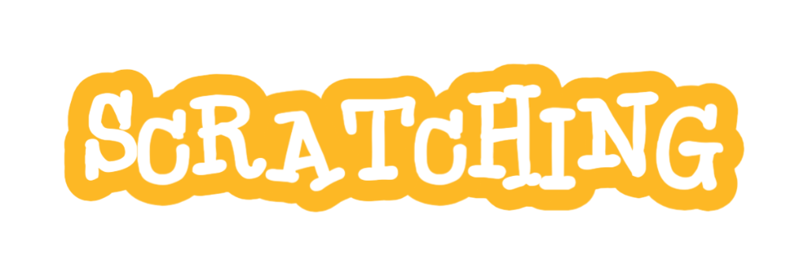

Scratch can be so much fun! You can make games, art, animations and more BUT! That doesn't mean you can make the best games on your first go. Here are some tips for using scratch.
1. Re re remix! You can get so many ideas by remixing projects! Get some code and help with bugs, ideas and new features!
2. BACKPACKS AT THE READY! Make sequels to your projects. Use your backpack to transfer sprites, code and sounds!
3. Plan Your Project First Sketch out your idea before you start coding. Decide what sprites, backgrounds, and events you’ll need. Break your project into small, manageable steps.
Use Variables Instead of Lists If you need to track scores, timers, or other data, create variables like Score, Timer, or Lives. Use multiple variables if you need to store separate pieces of data.
It's better to think about your project first before creating it, otherwise, you might need to start again.
